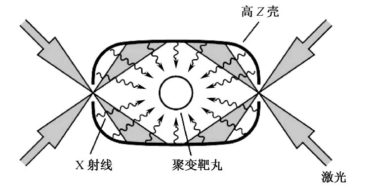

本章主要研究辐射流体物理，它对间接驱动ICF具有特别的意义.
黑腔靶是ICF靶中特殊的一类，在黑腔中，热辐射驱动靶丸烧蚀.

如图所示为典型的黑腔结构，其对于水平轴是柱对称的.
从位于轴上的两个小孔射入的激光束照射黑腔的内表面，从而加热黑腔；然后从激光相互作用点和壁上其他加热的地方产生的X射线驱动靶丸.
在这种机制中，激光束不直接驱动靶丸，因此称为间接驱动ICF.
腔壁由金或其他高Z材料组成，因此产生的等离子体有很大的光厚，能把大多数吸收的激光能量转换成X射线辐射出来.
利用黑腔是为了确保靶丸驱动具有足够的对称性.
按定义，黑体辐射是均匀且各向同性的，因此对驱动球形内爆式很理想的.
转换成热X射线是突破激光相干性的最根本方法，具有相干相位的单色光容易形成干涉图像，这可能引起不稳定性增大，这是我们不希望的.
并且，腔内辐射运输的速度为光速，比流体运动速度快得多，因此，靶丸的烧蚀演化可以和壁上非球形的流体扰动很好地分开.
什么叫高Z？什么叫光厚？哪里来的等离子体？为什么可以转换成X射线？
干涉图像导致不稳定，是因为不均匀吗？
哪里来的流体扰动？